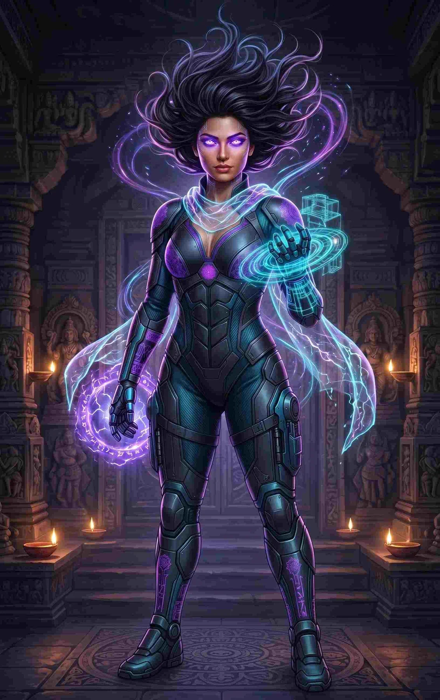
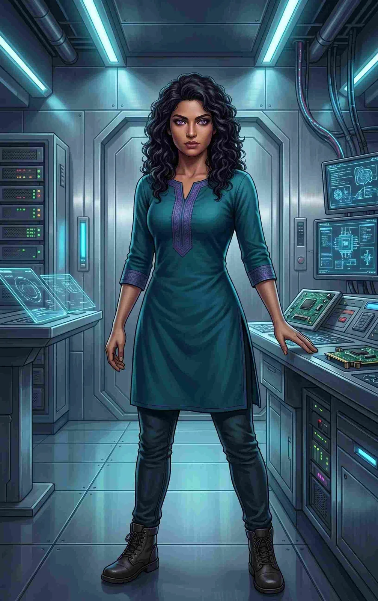
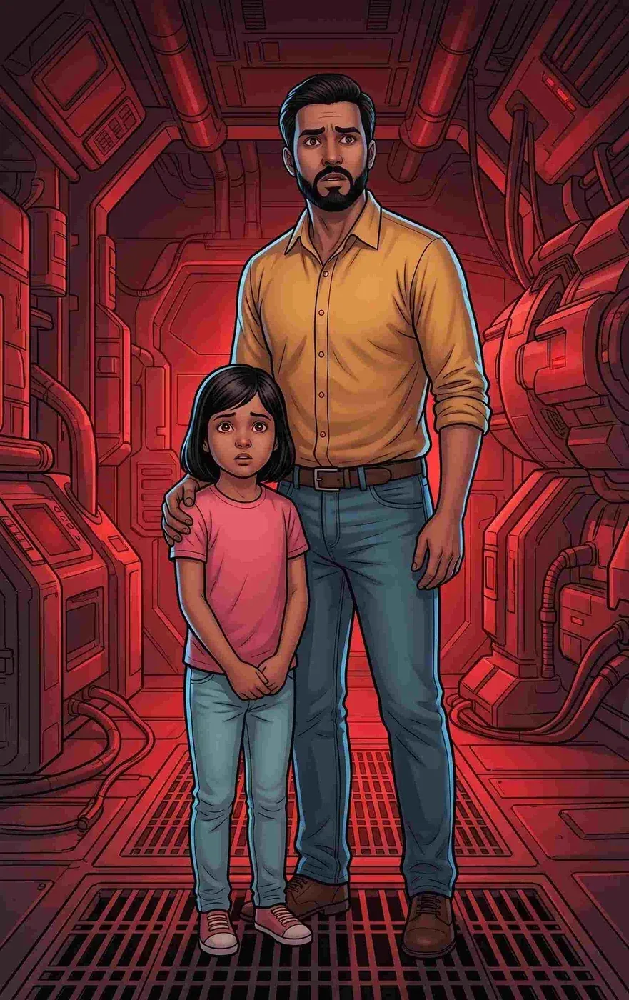
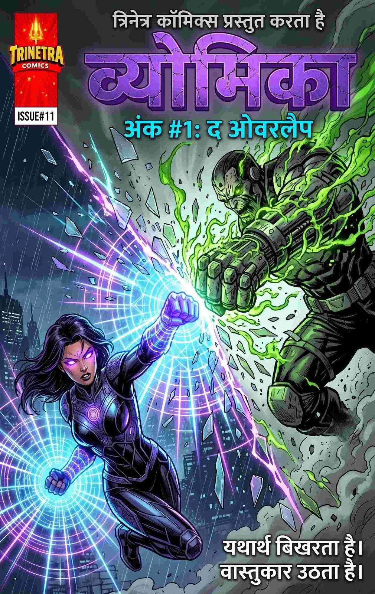
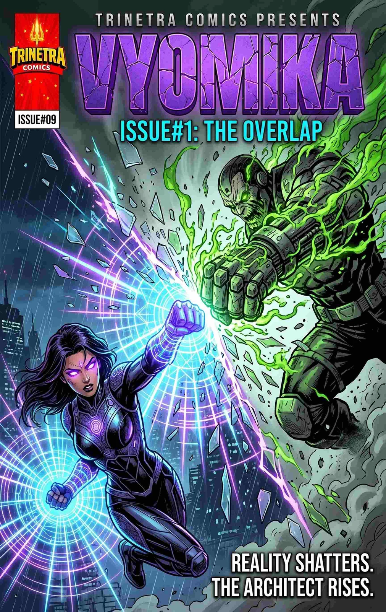

Spatial Folding
Folds, bends and shatters the physical space between objects, enabling instantaneous short-range teleportation through portals and structural manipulation.

THE ARCHITECT OF SPACE / DEVI OF THE SKY
THE ARCHITECT OF SPACE
Dr. Avni Mathur was on the verge of providing infinite clean energy to Kolkata when corporate terrorists attacked her lab. The resulting explosion fused her DNA with the fabric of space, turning her into the reality-bending superhero Vyomika. Her husband and daughter were trapped exactly one millimeter outside reality—and bringing them home has become her impossible equation.
Folds, bends and shatters the physical space between objects, enabling instantaneous short-range teleportation through portals and structural manipulation.
Generates hyper-dense “Gravity Wells” capable of freezing massive falling objects in mid-air or crushing heavily armoured targets with the force of five G’s.
Projects cyan and neon-violet geometric spatial energy to create shields, ramps, spatial tethers and concussive weapons.
Pushes her atomic structure to the brink of collapse and shifts her frequency one millimeter outside reality into “The Overlap,” becoming completely intangible in the physical world.
A prodigy in architectural engineering, quantum mechanics and spatial mathematics.
Perceives the world as a structural wireframe blueprint, instantly identifying load-bearing weaknesses, structural faults and enemy thermal signatures through solid walls.
Uses her environment and advanced physics to dismantle enemies rather than relying on brute martial arts.
A sleek, form-fitting tactical suit made of interlocking matte-obsidian smart-plates and deep cyan woven carbon-fibre. It features kinetic-dampening boots and digitally retracts into her civilian collar.
Her signature construct—a translucent, flowing energy dupatta that acts as a dynamic shield, kinetic bat or aerodynamic stabilizer during flight.
Project complex spatial coordinates and blueprints.
Using Phase-Walk for more than five seconds causes her atoms to completely detach from reality, erasing her from existence.
Her powers require intense subconscious mathematical calculation. Extreme concussive force or sonic disruption can break her concentration and shatter her constructs.
The sight of her phantom family paralyzes her with grief. Villains who discover her connection to the Overlap can use it to emotionally manipulate or torture her.
Before the accident, Avni was warm, optimistic and deeply loving. Today, Vyomika operates with cold, mathematical precision. She masks a profoundly broken heart beneath a terrifying, apex-predator exterior.
She is fiercely protective of innocents but absolutely ruthless toward VANGARD. Her entire existence is driven by a singular, agonizing goal: solving the impossible equation to bring her family home.
She has sharp, aristocratic Indian features, high cheekbones, an elegant jawline and thick, asymmetrical raven-black hair. Faint luminescent silver geometric lines—mandalas and blueprints—trace her temples, cheeks and neck, pulsing when she uses her powers.

THE WOMAN BEHIND THE DEVI OF THE SKY
Before becoming Vyomika, Avni was the lead architect and engineer at Skyline Dynamics in Sector V, Kolkata. She designed the Spatial Engine, a revolutionary device meant to harvest clean energy by folding microscopic pockets of space.
High-end, cutting-edge Indian-corporate fusion: crisp, asymmetrical charcoal or slate-grey kurtas layered over sleek dark trousers, paired with sharp stilettos and minimalist metallic geometric jewellery.
Her superhero form leaves her face completely unmasked, allowing her blazing neon-violet eyes to strike terror. The matte-obsidian Anchor Suit is etched with subtle glowing violet Indian mandala patterns across the chest and gauntlets.
She is surrounded by floating geometric shards and her flowing cyan/violet Hard-Light Dupatta.

SHORT BIO
Dr. Avni Mathur was on the verge of providing infinite clean energy to Kolkata when corporate terrorists attacked her lab. The resulting explosion fused her DNA with the fabric of space, turning her into the reality-bending superhero Vyomika. However, the blast trapped her husband and daughter exactly one millimeter outside of reality. Now she fights a brutal war against the terrorists who destroyed her life while desperately searching for a way to pull her phantom family back into our world.
DETAILED BIO
Avni was celebrating the Spatial Engine prototype's success with her husband, Kabir, and five-year-old daughter, Indu, when VANGARD stormed the facility. Led by the phase-shifting terrorist Commander Vance (Rupture), the mercenary group sought the technology for its own ends.
Avni triggered an emergency lockdown to keep the technology from Vance. The core destabilized. Instead of fire, the explosion produced a catastrophic wave of reality-shattering spatial energy: the “Glass Wall of Reality” broke. The energy bonded with Avni, rewriting her cellular structure and turning her into a living conduit for spatial physics.
Kabir and Indu were ejected from the dimensional frequency. They were not killed; they became shimmering, untouchable digital phantoms visible only to Avni, frozen in terror in a space she calls “The Overlap.”
Retreating to the ruined outskirts of Kolkata, Avni built “The Anchor Point,” a massive underground laboratory. As Vyomika, she wages a relentless one-woman war against VANGARD to stop them from weaponizing her stolen equations while trying to solve the ultimate mathematical impossibility: breaking the laws of the universe to hold her family one more time.
Kabir and Indu exist entirely as glowing, untouchable silver and neon-purple digital static, trapped exactly one millimeter outside base reality. They are the emotional anchor of Avni's story.
Maximum 3 latest issues

एक प्रतिभाशाली आर्किटेक्ट को कोलकाता शहर को एक खूंखार आतंकवादी की विनाशकारी साजिश से बचाने के लिए भौतिकी के नियमों को तोड़ना होगा, जबकि उसका अपना परिवार वास्तविकता से ठीक एक मिलीमीटर बाहर फंसा हुआ है।

A brilliant architect must weaponize the laws of physics to save Kolkata from an apocalyptic terrorist plot, all while her family remains trapped exactly one millimeter outside of reality.
THE TRINETRA UNIVERSE
Her equation is impossible. Her purpose is not.